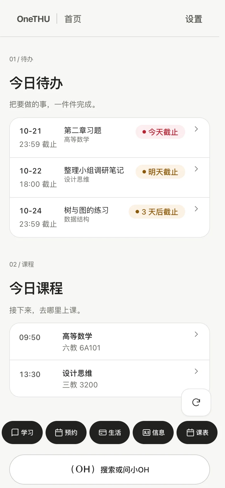
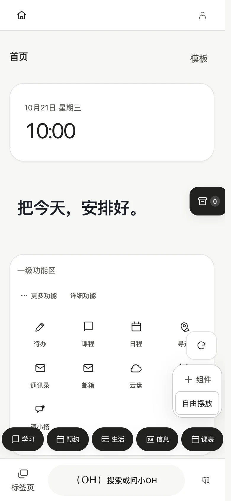
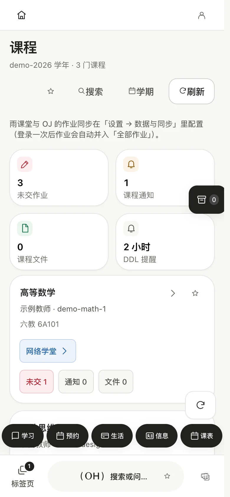
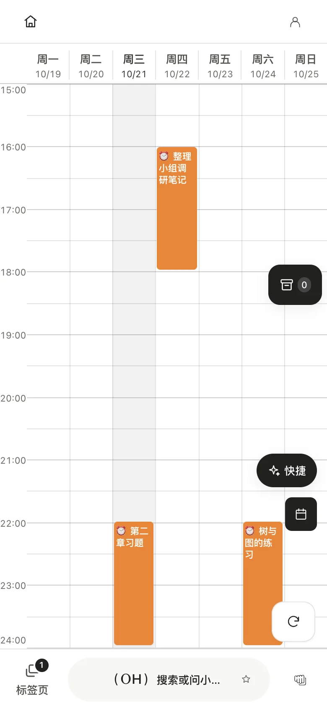
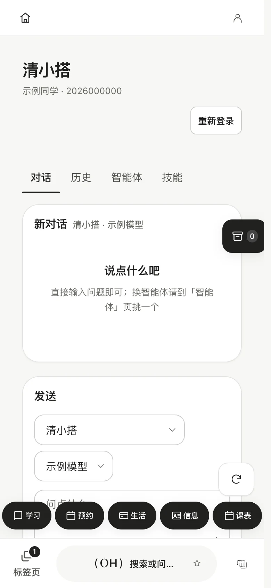
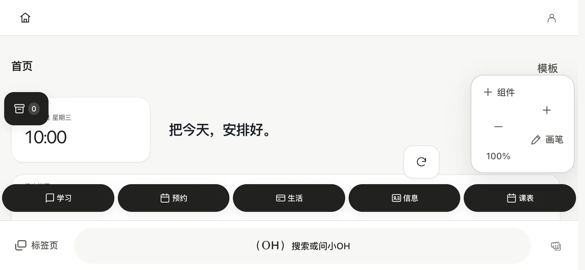
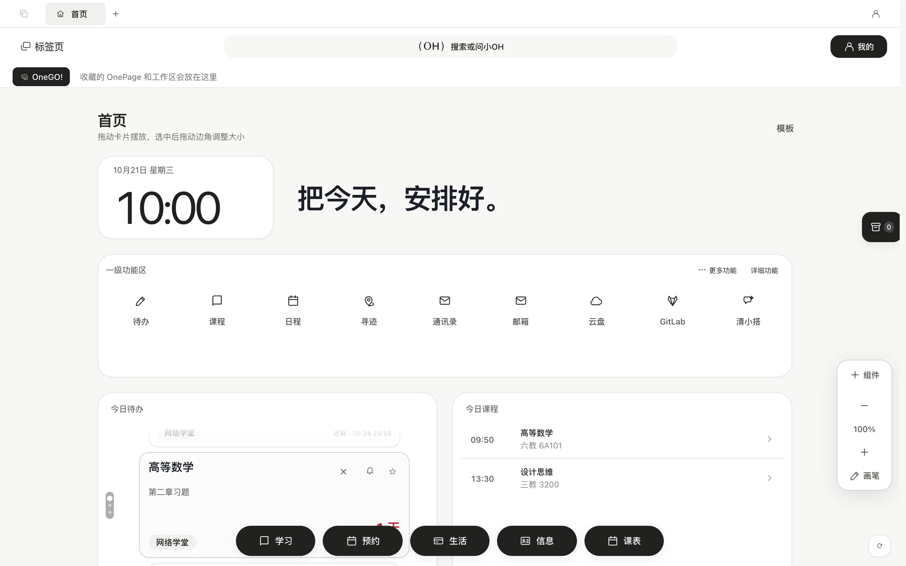

(One THU)
OneTHU 0.11.2 / Revolution
校园万物，汇于一处。
学习、生活、灵感。
主题、壁纸与布局，都按你的习惯来。
macOS · Windows · Android

模拟数据 · 滚动查看01 / 自由选择
刚刚好，也可以全都要。
三种模式，共用搜索与 OH。切换只改变显示方式，完整模式的设置与数据会保留。
02 / 一个入口
先找到，再做到。
03 / 长按，提起，收好
一处暂存。
下一步，从容。
长按作业、课件或白板组件，移到高亮的暂存箱按钮，松手收纳。也支持已接入的标签页、工作区、搜索结果、日程、名片、邮件与云盘内容。
再用在线短口令分享。NFC 目前可用性不稳定，请尽量使用口令。
查看支持范围04 / 横竖之间
小屏清晰。大屏舒展。
以下界面均由应用模拟数据视图采集，不包含真实用户资料。界面示例为中文，应用另有多语言支持。




